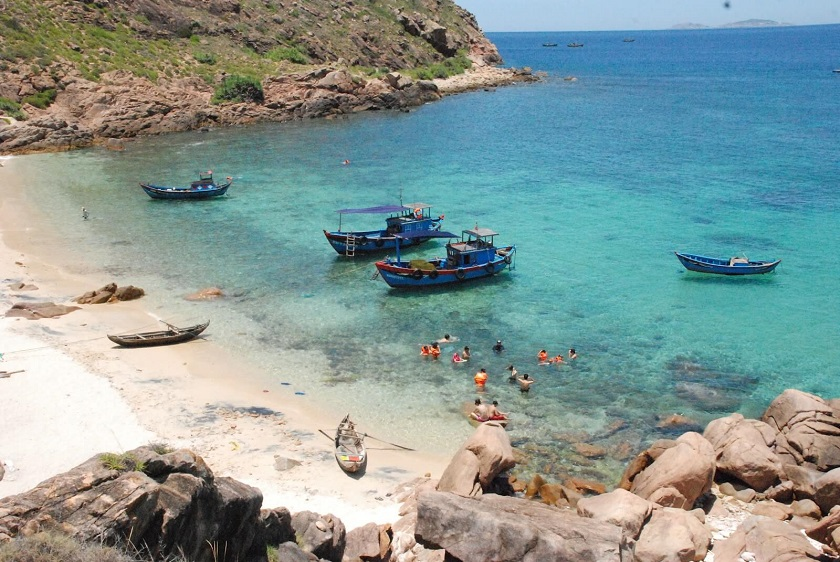

15 ĐIỂM DU LỊCH Ở QUY NHƠN ĐẸP NHẤT DU KHÁCH KHÔNG NÊN BỎ LỠ
> 
Du lịch Quy Nhơn bạn không thể bỏ qua Cù Lao Xanh - Một hòn đảo quân sự, nằm cách cửa biển
Quy Nhơn 13 hải lý. Cù Lao Xanh có diện tích khoảng 70ha san hô rộng lớn bao quanh đảo, nơi đây có rất nhiều loại hải sản quý hiếm, các
rặng san hô đầy sắc màu và làn nước xanh mát lôi cuốn. Thời gian thích hợp nhất để đi Cù Lao Xanh là từ tháng 2 - 9, thời điểm này biển
lặng, nắng đẹp, nước biển trong xanh, bạn có thể thoải mái tắm biển, lặn ngắm san hô quanh đảo. Lưu ý, từ tháng 10 - 2 là thời điểm mưa
nhiều, biển động, có nhiều sóng lớn nên không phù hợp để đi du lịch Cù Lao Xanh mùa này.
Phương tiện đến Cù Lao Xanh có 2 loại chính đó là cano và tàu gỗ. Thời gian đi cano mất khoảng 25 phút, giá vé là
200.000đ/người/lượt. Thời gian đi bằng tàu gỗ mất khoảng 2 tiếng, giá vé 35.000đ/người/lượt.
Cù Lao Xanh
Du lịch Cù Lao Xanh bạn sẽ có cơ hội tham gia vào các hoạt động như:
- Tắm biển, lặn ngắm san hô (chi phí khoảng 100.000đ/người), trải nghiệm cảm giác mạnh với trò chơi mô tô nước hay câu mực,...
- Khám phá các địa điểm tham quan hấp dẫn trên đảo như: Khu dã ngoại Cù Lao Xanh (giá vé vào cổng khoảng 10.000đ/người), Bãi Đá Thảo Nguyên -
nơi check in vô cùng lý tưởng, với những bãi đá nhiều hình thù lạ mắt, ngọn Hải Đăng, cột cờ chủ quyền, Bãi Nam,...
- Thưởng thức các món đặc sản vô cùng hấp dẫn như: Cua đá (600.000đ - 800.000đ/kg), mực lá (350.000đ - 500.000đ/kg), nhím biển,
ốc mặt trăng, vú nàng nướng mỡ hành, rượu vú zẻ,...
Quy Nhơn có gì đẹp? Kỳ Co là một trong những hòn đảo nổi tiếng của Quy Nhơn. Nằm dưới chân núi Phương Mai,
thuộc xã đảo Nhơn Lý, cách thành phố Quy Nhơn tầm 20km, Kỳ Co là điểm đến vô cùng thu hút đối với khách du lịch bởi khí hậu trong
lành, phong cảnh đẹp, và những người dân địa phương thân thiện, hiếu khách. Phương tiện chính để đi đến đảo Kỳ Co đó là cano,
xuất phát từ Eo Gió, bạn chỉ mất khoảng 30 phút để ra tới đảo.
Đến Kỳ Co du khách sẽ được tận mắt chiêm ngưỡng cảnh sắc thiên nhiên kỳ vĩ, những bãi cát trắng phau trải dài dưới chân núi đá,
các tảng đá to nhỏ với nhiều hình dáng khác nhau đứng sừng sững bên bờ biển. Khi nước triều rút xuống, trên bãi Kỳ Co sẽ xuất
hiện nhiều những hang động tự nhiên rất đẹp.
Một trong các địa điểm du lịch ở Quy Nhơn đẹp nhất mà bạn không thể bỏ qua đó là Hòn Khô hay còn gọi là
Cù Lao Hòn Khô. Đây là hòn đảo nằm cách trung tâm thành phố Quy Nhơn khoảng 16km, thuộc thôn Hải Đông, xã Nhơn Hải, Bình Định.
Để đến được Hòn Khô, bạn có thể chạy xe máy hoặc ô tô qua cầu Thị Nại, đến làng chài xã Nhơn Hải, sau đó thuê thuyền chở ra đảo
(giá thuê từ 200.000đ - 300.000đ/thuyền tùy vào số lượng người), thời gian đi từ cảng Nhơn Hải tới đảo Hòn Khô là 10 - 15 phút.
Đây là hòn đảo nổi tiếng với cảnh vật hoang sơ tuyệt đẹp, nhiều bãi cát trắng mịn. Trên đảo hầu như không có dân cư sinh sống.
Nhìn từ đất liền, Hòn Khô giống như một tảng đá khổng lồ mọc lên giữa biển. Thời gian đẹp nhất để du lịch ở Hòn Khô là từ tháng
3 - 9, thời điểm này Hòn Khô đẹp tuyệt vời với bãi cát dài trắng mịn, những rạn san hô sặc sỡ, hay lạch nước ngọt nứt từ vách đá,
tất cả đều giống như một bức tranh kỳ diệu.